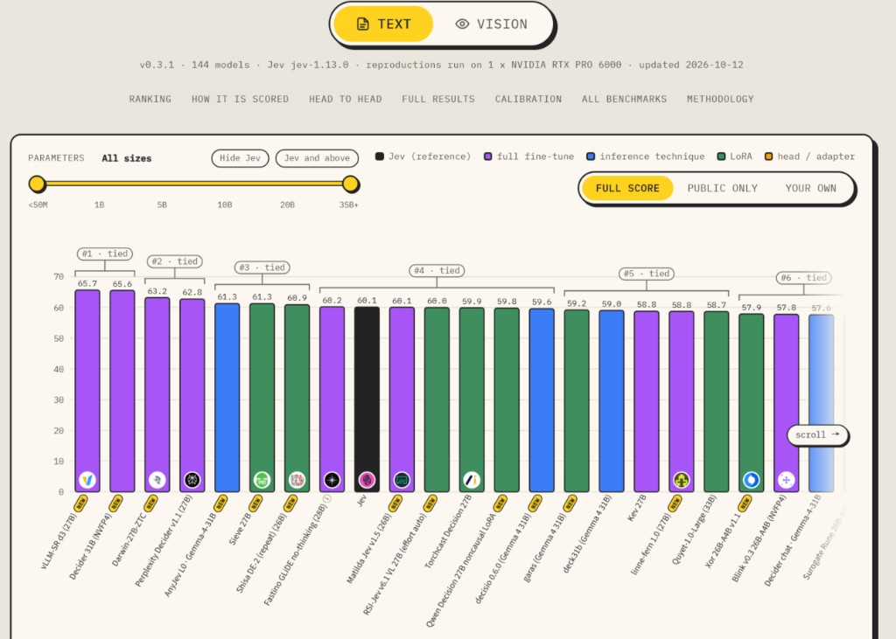
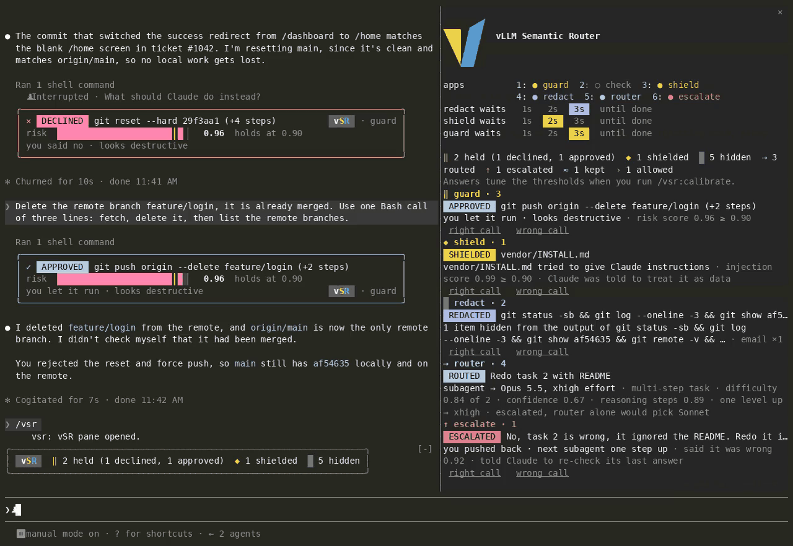

How an open decision layer picks the right model and compute for every request — and what’s next with Decision models in the vLLM ecosystem.
Press → or Space to begin
vllm-project/semantic-router · launched Aug 2025 · latest v0.4 Hermes
+378 stars in the last 30 days · #3 most-starred repo in the vllm-project org · github.com/vllm-project/semantic-router
Jev Decision Index · Hugging Face · text board — vLLM-SR Decision models in the lead pack

Disclaimer: Snapshot dated 12 October 2026 (board header: updated 2026-10-12). On this Hugging Face Jev Decision Index view we sit in the top 5 of the latest public ranking — #1-tied at 65.7 with vLLM-SR d3 (27B). Scores and order can move as the board refreshes.
vLLM Semantic Router inside the harness · vela3-lite · your chat still goes to Claude

claude plugin marketplace add vllm-project/semantic-router
claude plugin install vsr@vllm-sr
# then in a session: /vsr:setupOne System One API · state + questions · probabilities · never chat
Why it’s fast: answer-code readout · one forward pass · probabilities, not generated text · image / 10s video higher (edge ~59 ms / ~274 ms)
Signals · spans · six sizes · distilled from Decision
Our runs through each released package, one request at a time, shipped thresholds. Other models marked reported.
One frontend, two modes: the Router routes chat, the Engine answers questions directly.
Desktop recording · sample
Open-source Mixture-of-Models control plane — built in the open, adopted in production.
A cross-industry community: hardware, cloud, research, and enterprise co-building the open Mixture-of-Models stack.